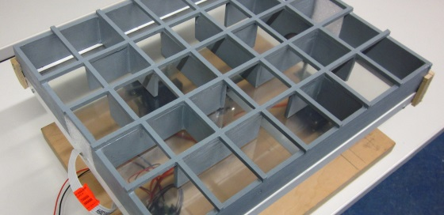
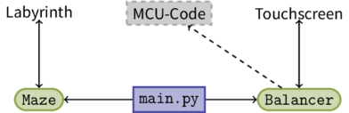

Überblick

Aufgabenstellung
Ein bereits vorhandener Roboter mit neigbarem Touchscreen soll etwas Neues lernen: Er soll ein beliebiges auf dem Rahmen seines Touchscreens aufliegendes Labyrinth (vorgegebener Rastergröße) mithilfe einer Metallkugel einlesen können. Der Roboter kann eine solche Kugel bereits auf eine ihm vorgegebene Richtung durch Kippen rollen lassen und dort ausbalancieren, so dass die Kugel stillsteht. Das Roboter soll zudem ein zuvor eingelesenes Labyrinth mit der Kugel auf optimalem Weg lösen können.
Vereinfachungen
Wir haben zunächst ein paar vereinfachende Annahmen getroffen:
Das Labyrinth soll rechteckig und gleichmäßig sein.
Beispiel:
+--+--+--+--+--+--+--+ | | | + +--+ + + +--+ + | | | | | | + + + + +--+ +--+ | | | | | +--+--+--+--+--+--+--+- Die Maße des Labyrinths werden als bekannt vorausgesetzt.
Code-Aufteilung
Der Roboter, auf dem unsere Aufgabenstellung aufbaut, wird alleine durch den Mikrocontroller (MCU) gesteuert. Wir hingegen haben die Labyrintherkennungs- und Lösungslogik auf dem Computer entwickelt. Dabei haben wir uns für Python 2.7 entschieden. Für die Kommunikation zwischen dem Computer und dem Mikrocontroller wird die Softwarebibliothek pySerial 2.7 benutzt.
Unser Quellcode ist in drei Teile aufgeteilt:

- Die
Maze-Klasse ist eine Datenstruktur zur Speicherung des Labyrinths im Form eines einfachen Graphens. - Die
Balancer-Klasse ist speziell für die Kommunikation zwischen dem Computer und dem Touchscreen (Mikrocontroller) verantwortlich. - Die Logik für die Labyrintherkennung befindet sich in
main.py, das beide Klassen verbindet.
Über uns
- Florian Nowak: B.Sc. Mathematik, 7. Fachsemester
- Yichuan Shen: M.Sc. Mathematik, 1. Fachsemester
Betreuer: Gero Plettenberg, Supervisor: Thomas Kloepfer